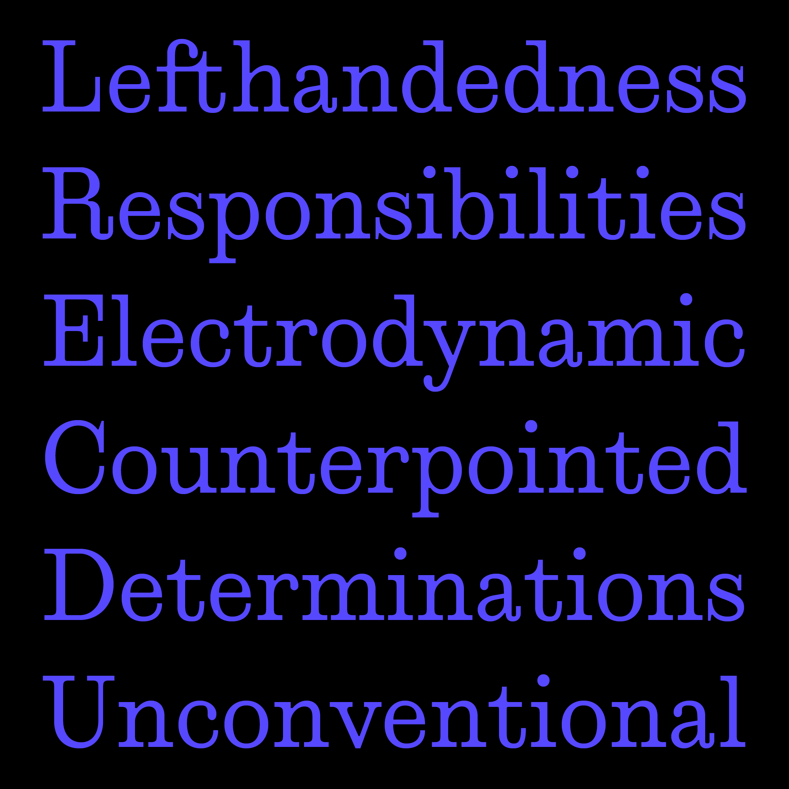
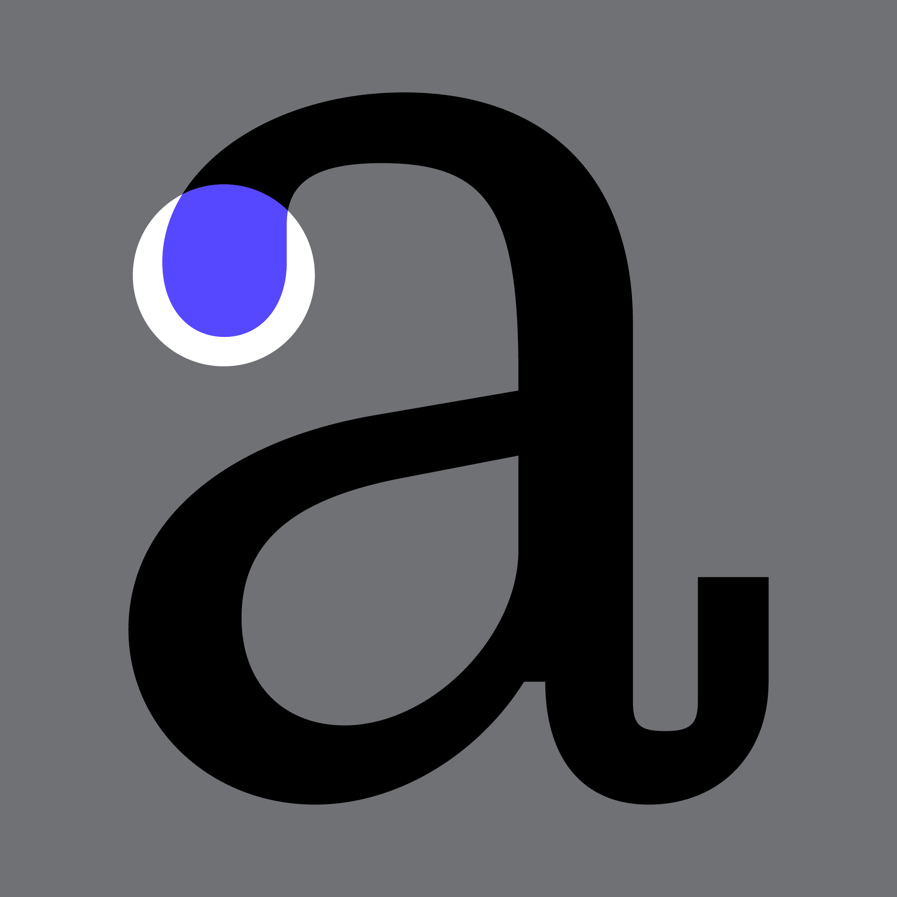
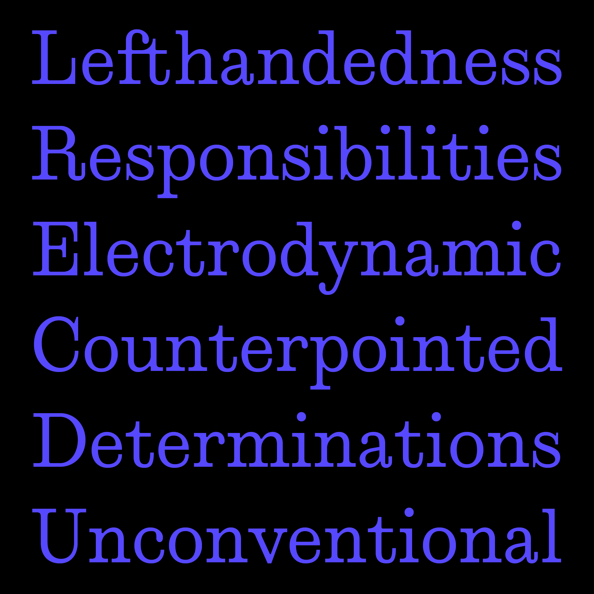
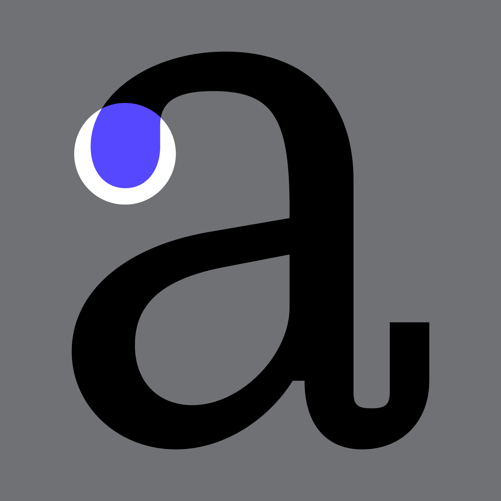
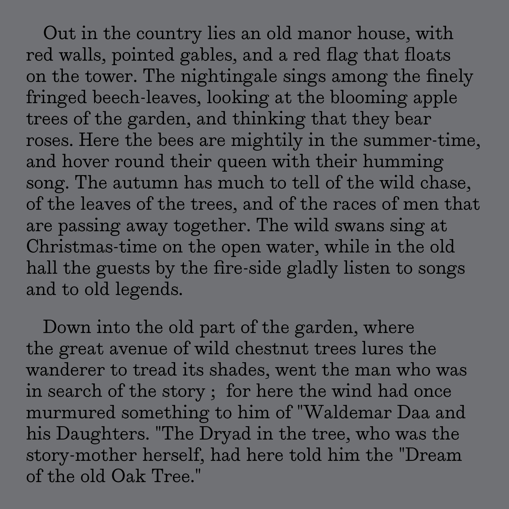
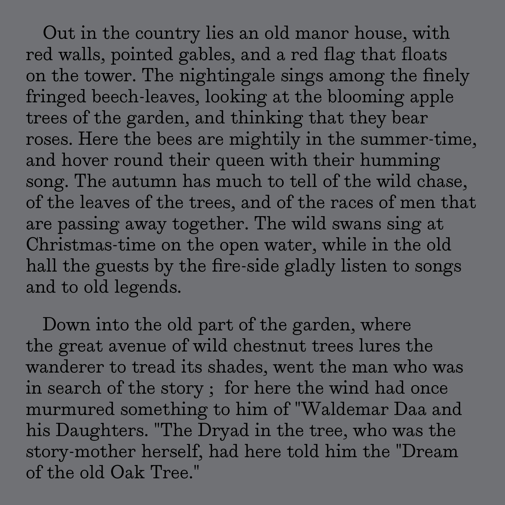

Willo
Jacob Witt
Willo is a revival typeface based on Vincent Figgins' Ionic. Found in The Will-o’-the Wisp, and Other Stories (1892) while searching through the University of Florida's Digital Collections archive, I chose to accentuate some of the errors found in certain characters that were either made while printing or during the digitization of the book. The droopy ball terminals, ink traps and the squaring off of hooked characters are all elements that I chose to highlight in the design of Willo.
Jacob Witt is a Los Angeles based graphic designer. In his free time he enjoys watching horror movies, collecting punk records and listening to old recordings of Coast to Coast AM with Art Bell.
 



 
